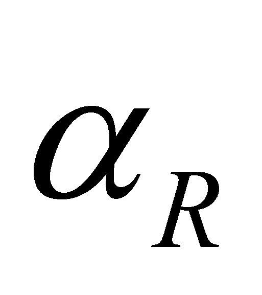

|
|
|
One of the most concise presentations of the derivative concept according to the classic differential calculus may be found into The Engineer’s Textbook18.
Derivative’s definition. Considering y=f(x) as a continuous function within an interval (a, b) and a point x0 inside it. By definition, it is named the function’s derivative into x0 the limit towards which the ratio between the function growth and variable growth tends to, when the latter tends to zero.
(X.3.2.2.1)
If this limit really exists, we may say
that the function f(x) is derivable in x0.
If we are making the graphical plotting of the function f(x),
the derivative represents in a specific point an angular coefficient
of the tangent to the curve. It is possible that the limit of this
ratio to have two values in a single point, just as
 tends to zero by means of positive or negative values; we may say
that we are dealing with a derivative oriented either to the left or
to the right.
tends to zero by means of positive or negative values; we may say
that we are dealing with a derivative oriented either to the left or
to the right.
Differentials. We shall consider y=f(x) as a derivable function into an interval (a,b) by considering x a variable ranging within this interval. The growth of variable dx shall be called the variable’s differential. By definition, we shall assign the following value to the function’s differential:
(X.3.2.2.2)
In order to comment the above-mentioned definitions, the following elements are being displayed in the figure X.3.2.2.1:
the curve f(x) on which there is a current point ;
there are other two points on the curve and, where and ;
tangent at the curve f(x) in the point P, where the points and may be found on;
Fig. X.3.2.2.1
One may observe that the points M, P and N belong to the curve f(x), whereas the points Q and S do not, but when making the differentials calculation on the left or right side of the point P even the values from Q and S are intervening, although they do not belong to the function (for example, the differential on the right side of P is represented by the segment RQ, according to the definition, whereas the real variation is RN). In case that the values of the function from M, P and N are obtained by means of sampling, the values from Q and S are clearly out of question since they are pure abstract values (generated by means of calculus). In the plot from the figure X.3.2.2.1, the line which connects two points from the curve, for instance PM, is considered as the secant of the curve f(x). This secant shows an angular direction against the reference axis X (axis of the values belonging to the independent variable), evaluated on the left of the reference , given by the following relation:
(X.3.2.2.3)
and secant PN has an angular direction  against the same reference axis X, evaluated on the right of the reference , given by the following relation:
(X.3.2.2.4)
Both relations are valid for any finite
and non-zero interval
 ,
but according to the relation X.3.2.2.1, when defining the classic
derivative, this interval becomes null at a certain point (in the
point P), where the classic differential calculus defines the
derivative in the point P.
,
but according to the relation X.3.2.2.1, when defining the classic
derivative, this interval becomes null at a certain point (in the
point P), where the classic differential calculus defines the
derivative in the point P.
18 *** - Manualul Inginerului - Editura Tehnicã, Bucureºti, 1965.
Copyright © 2006-2011 Aurel Rusu. All rights reserved.